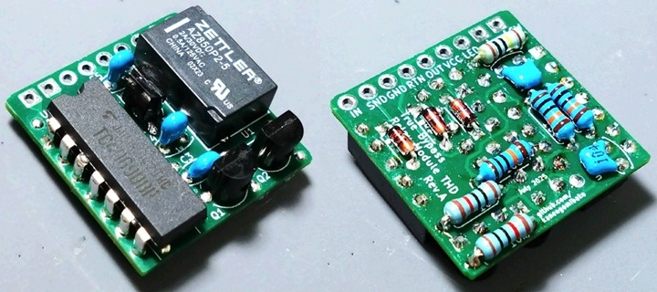
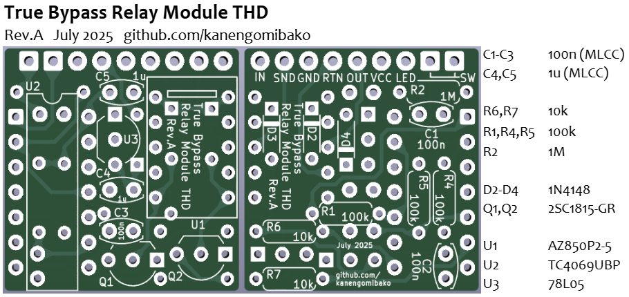
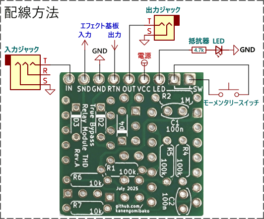

True Bypass Relay Module THD
2026年04月04日 カテゴリー：自作エフェクター（アナログ）

以前製作したTrue Bypass Relay Moduleを小型化したものです。
回路図

低価格なラッチリレーAZ850P2-5を使っています。スイッチ、LED以外の部品を秋月電子でそろえた場合の総額は324円です。
基板・配線


コンデンサは、積層セラミックコンデンサ（MLCC）を使用します。リストにはありませんが、LED、LEDの電流制限用抵抗、モーメンタリースイッチが別途必要です。4層基板で、表裏両方に部品を配置することで省スペースとなっています。実装後の高さは約9mmです。